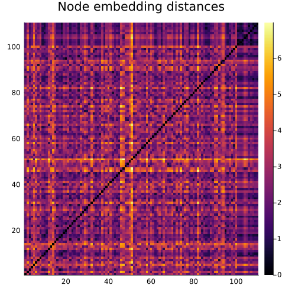
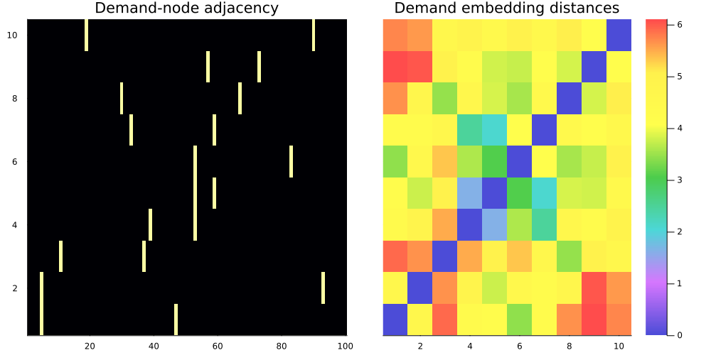

Machine Learning
Machine learning based sparsification.
Index
MultiFlows.ML.AugmentedGraphMultiFlows.ML.M3EdgeReverseLayerMultiFlows.ML.M3EdgeReverseLayerMultiFlows.ML.M8ClassifierModelMultiFlows.ML.M8ClassifierModelMultiFlows.ML.M8ClassifierModelMultiFlows.ML.M8ClassifierModelMultiFlows.ML.M8MPLayerMultiFlows.ML.M8MPLayerMultiFlows.ML.M8MPLayerMultiFlows.ML.MLPMultiFlows.ML.MyMEGNetConv3MultiFlows.ML.accuracyMultiFlows.ML.aggregate_demand_labelsMultiFlows.ML.augmented_graphMultiFlows.ML.check_deviceMultiFlows.ML.compute_edge_demand_scoresMultiFlows.ML.compute_graph_embeddingsMultiFlows.ML.concat_nodesMultiFlows.ML.f_beta_scoreMultiFlows.ML.fncountMultiFlows.ML.fpcountMultiFlows.ML.get_instanceMultiFlows.ML.graph_reductionMultiFlows.ML.last_metricsMultiFlows.ML.last_valueMultiFlows.ML.load_datasetMultiFlows.ML.load_instanceMultiFlows.ML.make_batchableMultiFlows.ML.make_demand_codesMultiFlows.ML.make_demand_codesMultiFlows.ML.make_demand_codesMultiFlows.ML.make_plotsMultiFlows.ML.metricsMultiFlows.ML.metricsMultiFlows.ML.metricsMultiFlows.ML.node_distance_matrixMultiFlows.ML.node_embedding_distanceMultiFlows.ML.ones_and_zerosMultiFlows.ML.precisionMultiFlows.ML.recallMultiFlows.ML.tncountMultiFlows.ML.to_gnngraphMultiFlows.ML.to_gnngraphMultiFlows.ML.tpcountMultiFlows.ML.train_modelMultiFlows.ML.update!MultiFlows.ML.update!MultiFlows.ML.update!MultiFlows.demand_amountsMultiFlows.demand_endpoints
Instance encoding
MultiFlows.ML.AugmentedGraph — TypeAugmentedGraphRepresentation of an MCF instance as a directed graph. Demands are represented as vertices of the graph connected to the source and destination vertices. node_mask,edge_mask are boolean valued vectors respectively indicating the positions of the original graph vertices and edges. .!node_mask, .!edge_mask are used to retrieve vertices and edges corresponding to the demands.
MultiFlows.ML.aggregate_demand_labels — Methodaggregate_demand_labels(g::GNNGraph)Combine the labels for demands that share endpoints. If demands $k_1, k_2$ are such that $s_{k_1}=s_{k_2}$ and $t_{k_1} = t_{k_2}$ then their respective labels $l_1, l_2$ are set to $l_1 = l_2 = l_1 \& l_2$.
Example
julia> pb = MCF(grid((2,2)), rand(4), rand(4), [Demand(1,4,1.), Demand(1,4,1.), Demand(3,2,1.)]);
julia> y = rand(Bool, ne(pb), nk(pb))
8×3 Matrix{Bool}:
1 0 0
1 0 1
1 1 0
0 0 1
1 1 1
0 0 1
1 1 1
0 0 1
julia> gnn = aggregate_demand_labels(to_gnngraph(pb, y));
julia> gnn.targets
8×3×1 Array{Bool, 3}:
[:, :, 1] =
1 1 0
1 1 1
1 1 0
0 0 1
1 1 1
0 0 1
1 1 1
0 0 1
MultiFlows.ML.augmented_graph — Methodaugmented_graph(pb::MCF)Converts a MCF object to AugmentedGraph.
Example
julia> pb = MCF(grid((3,3)), rand(12), rand(12), [Demand(1,9,1.)]);
julia> g = augmented_graph(pb);
julia> pb.graph.srcnodes == g.edge_src[g.edge_mask]
true
julia> pb.graph.dstnodes == g.edge_dst[g.edge_mask]
true
julia> costs(pb) == g.edge_features[1,g.edge_mask]
true
julia> capacities(pb) == g.edge_features[2,g.edge_mask]
true
MultiFlows.ML.get_instance — Methodget_instance(g::AugmentedGraph)Convert an AugmentedGraph object to the corresponding MCF object.
Example
julia> pb = MCF(grid((3,3)), rand(12), rand(12), [Demand(1,9,1.)])
MCF(nv = 9, ne = 24, nk = 1)
Demand{Int64, Float64}(1, 9, 1.0)
julia> g = augmented_graph(pb);
julia> pb1 = get_instance(g)
MCF(nv = 9, ne = 24, nk = 1)
Demand{Int64, Float64}(1, 9, 1.0)
julia> pb1 == pb
trueMultiFlows.ML.ones_and_zeros — Functionones_and_zeros(k::Int64,
dev::Function=CUDA.functional() ? Flux.gpu : Flux.cpu
)Utility function that concatenated a vector of k ones with k zeros and sends the result to the GPU if available.
MultiFlows.ML.to_gnngraph — Methodto_gnngraph(pb::MCF, y::AbstractMatrix; feature_type::DataType=eltype(costs(pb)))Convert a UMFData instance to GNNGraph object with target labels.
Example
julia> pb = MCF(grid((3,3)), rand(12), rand(12), [Demand(1,9,1.)]);
julia> y = rand(Bool, ne(pb), nk(pb));
julia> to_gnngraph(pb, y)
GNNGraph:
num_nodes: 10
num_edges: 26
ndata:
mask = 10-element Vector{Bool}
edata:
e = 3×26 Matrix{Float64}
demand_amounts_mask = 26-element BitVector
mask = 26-element Vector{Bool}
demand_to_source_mask = 26-element Vector{Bool}
target_to_demand_mask = 26-element Vector{Bool}
gdata:
targets = 24×1 Matrix{Bool}
K = 1
E = 24
MultiFlows.ML.to_gnngraph — Methodto_gnngraph(pb::MCF; feature_type::DataType=eltype(costs(pb)))Convert a MCF instance to GNNGraph object.
Example
julia> pb = MCF(grid((3,3)), rand(12), rand(12), [Demand(1,9,1.)])
MCF(nv = 9, ne = 24, nk = 1)
Demand{Int64, Float64}(1, 9, 1.0)
julia> to_gnngraph(pb)
GNNGraph:
num_nodes: 10
num_edges: 26
ndata:
mask = 10-element Vector{Bool}
edata:
e = 3×26 Matrix{Float64}
demand_amounts_mask = 26-element BitVector
mask = 26-element Vector{Bool}
demand_to_source_mask = 26-element Vector{Bool}
target_to_demand_mask = 26-element Vector{Bool}
gdata:
K = 1
E = 24
MultiFlows.demand_amounts — MethodMultiFlows.demand_amounts(g::GNNGraph)Get the demand amounts from a GNNGraph.
Example
julia> demand_amounts(gnn)
3-element Vector{Float64}:
1.0
2.0
3.0
MultiFlows.demand_endpoints — MethodMultiFlows.demand_endpoints(g::GNNGraph)Get the demand endpoints (source and destination vertices) from a GNNGraph.
Example
julia> pb = MCF(grid((3,3)), rand(12), rand(12), [Demand(1,9,1.), Demand(2,8,2.), Demand(3,7,3.)])
MCF(nv = 9, ne = 24, nk = 3)
Demand{Int64, Float64}(1, 9, 1.0)
Demand{Int64, Float64}(2, 8, 2.0)
Demand{Int64, Float64}(3, 7, 3.0)
julia> gnn = to_gnngraph(pb);
julia> demand_endpoints(gnn)
([1, 2, 3], [9, 8, 7])
Datasets
MultiFlows.ML.load_dataset — Methodload_dataset(dataset_dir::String;
scale_instances::Bool=true,
batchable::Bool=true,
edge_dir::Symbol=:double,
feature_type::DataType=Float32,
show_progress::Bool=false
)Load dataset from directory. If instance directories contain a labels.jld2 file it is added to the targets field of the GNNGraph object. If scale_instances=true instances are scaled by calling scale before being added, if batchable=true a call to make_batchable is executed on the list of graphs.
Example
Create a simple dataset :
julia> pb = MCF(grid((2,2)), rand(4), rand(4), [Demand(1,4,1.), Demand(1,4,1.), Demand(3,2,1.)]);
julia> # labeling function
julia> function labeling_f(path::String)
pb = MultiFlows.load(path, edge_dir=:double)
_,(model,ss) = solve_compact(pb, return_model=true, max_acceptance=true)
labels = value.(model[:x]) .> 0
labels_path = joinpath(path, "labels.jld2")
jldsave(labels_path; labels)
end
labeling_f (generic function with 1 method)
julia> # perturbation function
julia> function perturbation_f(pb::MCF)
generate_example(pb, nK=nk(pb)+rand([-1,0,1]))
end
perturbation_f (generic function with 1 method)
julia> make_dataset(pb, 5, "small_dataset",
overwrite=true,
perturbation_f=perturbation_f,
labeling_f=labeling_f,
show_progress=false
)
Now load the instances. By default load_dataset ensures that the graph features are batchable.
julia> d = load_dataset("small_dataset")
5-element Vector{GNNGraph}:
GNNGraph(7, 14) with mask: 7-element, (e: 3×14, demand_amounts_mask: 14-element, mask: 14-element, demand_to_source_mask: 14-element, target_to_demand_mask: 14-element), (targets: 8×4×1, K: 0-dimensional, target_mask: 8×4×1, E: 0-dimensional) data
GNNGraph(6, 12) with mask: 6-element, (e: 3×12, demand_amounts_mask: 12-element, mask: 12-element, demand_to_source_mask: 12-element, target_to_demand_mask: 12-element), (targets: 8×4×1, K: 0-dimensional, target_mask: 8×4×1, E: 0-dimensional) data
GNNGraph(6, 12) with mask: 6-element, (e: 3×12, demand_amounts_mask: 12-element, mask: 12-element, demand_to_source_mask: 12-element, target_to_demand_mask: 12-element), (targets: 8×4×1, K: 0-dimensional, target_mask: 8×4×1, E: 0-dimensional) data
GNNGraph(6, 12) with mask: 6-element, (e: 3×12, demand_amounts_mask: 12-element, mask: 12-element, demand_to_source_mask: 12-element, target_to_demand_mask: 12-element), (targets: 8×4×1, K: 0-dimensional, target_mask: 8×4×1, E: 0-dimensional) data
GNNGraph(8, 16) with mask: 8-element, (e: 3×16, demand_amounts_mask: 16-element, mask: 16-element, demand_to_source_mask: 16-element, target_to_demand_mask: 16-element), (targets: 8×4×1, K: 0-dimensional, target_mask: 8×4×1, E: 0-dimensional) data
julia> batch(d)
GNNGraph:
num_nodes: 33
num_edges: 66
num_graphs: 5
ndata:
mask = 33-element Vector{Bool}
edata:
e = 3×66 Matrix{Float32}
demand_amounts_mask = 66-element BitVector
mask = 66-element Vector{Bool}
demand_to_source_mask = 66-element Vector{Bool}
target_to_demand_mask = 66-element Vector{Bool}
gdata:
targets = 8×4×5 Array{Bool, 3}
K = 5-element Vector{Int64}
target_mask = 8×4×5 Array{Bool, 3}
E = 5-element Vector{Int64}
MultiFlows.ML.load_instance — Methodload_instance(path::String; scale::Bool=true, feature_type::DataType=Float32)Load single instance and return a GNNGraph.
MultiFlows.ML.make_batchable — Methodmake_batchable(gl::Vector{GNNGraph})Make GNNGraphs batchable, pads the targets fields with zeros thus ensuring that those fields may be concatenanted along their last dimension. Adds the target_mask field so that g.targets[g.target_mask] returns the original target values.
Example
julia> pb1 = MCF(grid((2,2)), rand(4), rand(4), [Demand(1,4,1.), Demand(1,4,1.), Demand(3,2,1.)]);
julia> _,(mod1,_) = solve_compact(pb1, max_acceptance=true, return_model=true);
julia> y1 = value.(mod1[:x]) .> 0 ;
julia> gnn1 = to_gnngraph(pb1, y1)
GNNGraph:
num_nodes: 7
num_edges: 14
ndata:
mask = 7-element Vector{Bool}
edata:
e = 3×14 Matrix{Float64}
demand_amounts_mask = 14-element BitVector
mask = 14-element Vector{Bool}
demand_to_source_mask = 14-element Vector{Bool}
target_to_demand_mask = 14-element Vector{Bool}
gdata:
targets = 8×3×1 BitArray{3}
K = 3
E = 8
julia> pb2 = MCF(grid((2,3)), rand(7), rand(7), [Demand(1,4,1.), Demand(1,4,1.), Demand(3,2,1.)]);
julia> _,(mod2,_) = solve_compact(pb2, max_acceptance=true, return_model=true);
julia> y2 = value.(mod2[:x]) .> 0 ;
julia> gnn2 = to_gnngraph(pb2, y2)
GNNGraph:
num_nodes: 9
num_edges: 20
ndata:
mask = 9-element Vector{Bool}
edata:
e = 3×20 Matrix{Float64}
demand_amounts_mask = 20-element BitVector
mask = 20-element Vector{Bool}
demand_to_source_mask = 20-element Vector{Bool}
target_to_demand_mask = 20-element Vector{Bool}
gdata:
targets = 14×3×1 BitArray{3}
K = 3
E = 14
If we try to create a batch of gnn1 and gnn2 a DimensionMismatch error is raised :
julia> batch([gnn1, gnn2])
ERROR: DimensionMismatch("mismatch in dimension 1 (expected 8 got 14)")
[...]julia> gl = make_batchable(GNNGraph[gnn1,gnn2])
2-element Vector{GNNGraph}:
GNNGraph(7, 14) with mask: 7-element, (e: 3×14, demand_amounts_mask: 14-element, mask: 14-element, demand_to_source_mask: 14-element, target_to_demand_mask: 14-element), (targets: 14×3×1, K: 0-dimensional, target_mask: 14×3×1, E: 0-dimensional) data
GNNGraph(9, 20) with mask: 9-element, (e: 3×20, demand_amounts_mask: 20-element, mask: 20-element, demand_to_source_mask: 20-element, target_to_demand_mask: 20-element), (targets: 14×3×1, K: 0-dimensional, target_mask: 14×3×1, E: 0-dimensional) data
julia> batch_g = batch(gl)
GNNGraph:
num_nodes: 16
num_edges: 34
num_graphs: 2
ndata:
mask = 16-element Vector{Bool}
edata:
e = 3×34 Matrix{Float64}
demand_amounts_mask = 34-element BitVector
mask = 34-element Vector{Bool}
demand_to_source_mask = 34-element Vector{Bool}
target_to_demand_mask = 34-element Vector{Bool}
gdata:
targets = 14×3×2 Array{Bool, 3}
K = 2-element Vector{Int64}
target_mask = 14×3×2 Array{Bool, 3}
E = 2-element Vector{Int64}Retrieving the labels
julia> gl[1].targets[gl[1].target_mask] == vec(y1)
true
julia> gl[2].targets[gl[2].target_mask] == vec(y2)
true
julia> batch_g.targets[batch_g.target_mask] == vcat(vec(y1), vec(y2))
trueEvaluation
MultiFlows.ML.accuracy — Methodaccuracy(y_pred::AbstractVector, y_true::AbstractVector)Evaluate the accuracy of the predicted values y_pred and true values y_true.
Example
julia> ML.accuracy([1,0,1,0], [1,1,0,0])
0.5MultiFlows.ML.check_device — Methodcheck_device(model)Utility function for checking the device of the model.
MultiFlows.ML.f_beta_score — Functionf_beta_score(y_pred::AbstractVector, y_true::AbstractVector, β::Real=1.0)Evaluate the F-score (F-score) of prediction y_pred and true values y_true with weight β.
Example
julia> f_beta_score([1,0,1,0], [1,1,0,0])
0.5MultiFlows.ML.fncount — Methodfncount(y_pred::AbstractVector, y_true::AbstractVector)Evaluate the False Negative count of prediction y_pred and true values y_true.
Example
julia> ML.fncount([1,0,1,0], [1,1,0,0])
1MultiFlows.ML.fpcount — Methodfpcount(y_pred::AbstractVector, y_true::AbstractVector)Evaluate the False Positive count of prediction y_pred and true values y_true.
Example
julia> ML.fpcount([1,0,1,0], [1,1,0,0])
1MultiFlows.ML.graph_reduction — Methodgraph_reduction(y_pred::AbstractArray)Evaluate the graph reduction i.e. portion of edges not selected by the model.
Example
julia> graph_reduction([1,0,1,0])
0.5MultiFlows.ML.metrics — Methodmetrics(pred::AbstractVector, labels::AbstractVector)Evaluates metrics between prediction pred and true labels labels.
Example
julia> pred = rand([0,1], 10);
julia> labels = rand([0,1], 10);
julia> metrics(pred, labels)
Dict{String, Float64} with 5 entries:
"rec" => 0.8
"gr" => 0.4
"prec" => 0.666667
"f1" => 0.727273
"acc" => 0.7
MultiFlows.ML.metrics — Methodmetrics(g::GNNGraph, model)Evaluate metrics of the prediction of model on graph g. Returns a dictionary containing the values of the accuracy, recall, precision, F-1 score and the graph reduction.
julia> pb = MCF(grid((2,2)), rand(4), rand(4), [Demand(1,4,1.), Demand(1,4,1.), Demand(3,2,1.)]);
julia> _,(mod,_) = solve_compact(pb, max_acceptance=true,return_model=true);
julia> y = value.(mod[:x]) .> 0 ;
julia> g = to_gnngraph(pb, y, feature_type=Float32);
julia> model = M8ClassifierModel(4, 3, 2, nv(pb));
julia> metrics(g, model)
Dict{String, Float64} with 5 entries:
"rec" => 0.625
"gr" => 0.25
"prec" => 0.277778
"f1" => 0.384615
"acc" => 0.333333
MultiFlows.ML.metrics — Methodmetrics(loader::DataLoader, model)Evaluate metrics for the prediction of model on all samples in a DataLoader object loader.
Example
julia> using Flux: DataLoader
julia> loader = DataLoader([to_gnngraph(pb, rand(Bool, ne(pb), nk(pb)), feature_type=Float32)
for _ in 1:10],
collate=true
)
10-element DataLoader(::Vector{GNNGraph{Tuple{Vector{Int64}, Vector{Int64}, Nothing}}}, collate=Val{true}())
with first element:
GraphNeuralNetworks.GNNGraphs.GNNGraph{Tuple{Vector{Int64}, Vector{Int64}, Nothing}}
julia> metrics(loader, model)
Dict{String, Float64} with 5 entries:
"rec" => 0.728095
"gr" => 0.25
"prec" => 0.438889
"f1" => 0.53621
"acc" => 0.458333
MultiFlows.ML.node_distance_matrix — Methodnode_distance_matrix(codes::AbstractMatrix; dist_func::Function=(x,y) -> norm(x-y))Computes distances between node embeddings, returns matrix. Used for plots.
MultiFlows.ML.node_embedding_distance — Methodnode_embedding_distance(g::GNNGraph, model)Mean embedding distance.
MultiFlows.ML.precision — Methodprecision(y_pred::AbstractVector, y_true::AbstractVector)Evaluate the precision (Precision and recall) of prediction y_pred and true values y_true.
Example
julia> ML.precision([1,0,1,0], [1,1,0,0])
0.5MultiFlows.ML.recall — Methodrecall(y_pred::AbstractVector, y_true::AbstractVector)Evaluate the recall (Precision and recall) of prediction y_pred and true values y_true.
Example
julia> ML.recall([1,0,1,0], [1,1,0,0])
0.5MultiFlows.ML.tncount — Methodtncount(y_pred::AbstractVector, y_true::AbstractVector)Evaluate the True Negative count of prediction y_pred and true values y_true.
Example
julia> ML.tncount([1,0,1,0], [1,1,0,0])
1MultiFlows.ML.tpcount — Methodtpcount(y_pred::AbstractVector, y_true::AbstractVector)Evaluate the True Positive count of prediction y_pred and true values y_true.
Example
julia> ML.tpcount([1,0,1,0], [1,1,0,0])
1Plots
MultiFlows.ML.make_plots — Methodmake_plots(model, g; device=CUDA.functional() ? Flux.gpu : Flux.cpu)Prepare plots representing the vertex embedding distances and demand vertex embedding distances.
| Vertex embedding distances | Demand vertex embedding distances |
|---|---|
|  |  |
History
MultiFlows.ML.last_metrics — Methodlast_metrics(history::Dict; prefix::String="train")Get the last set of metrics with prefix prefix.
Example
julia> last_metrics(hist)
(loss = 0.5805599818745412, acc = 0.32723787925628356)
julia> last_metrics(hist, prefix="test")
(acc = 0.29536650475479964, loss = 0.6644684787269287)
MultiFlows.ML.last_value — Methodlast_value(history::Dict, key::String)Get the last key value.
Example
julia> last_value(hist, "train_loss")
0.5805599818745412
MultiFlows.ML.update! — Methodupdate!(history::Dict, values::Dict; prefix::String="train")Update history inplace by adding values to dictionary.
Example
julia> hist
Dict{Any, Any} with 2 entries:
"train_loss" => [0.521214, 0.890879, 0.525662, 0.044818, 0.58056]
"train_acc" => [0.586807, 0.190907, 0.390588, 0.933353, 0.327238]
julia> update!(hist, Dict("loss"=>rand(), "acc"=>rand()))
julia> hist
Dict{Any, Any} with 2 entries:
"train_loss" => [0.521214, 0.890879, 0.525662, 0.044818, 0.58056, 0.526996]
"train_acc" => [0.586807, 0.190907, 0.390588, 0.933353, 0.327238, 0.836229]
julia> update!(hist, Dict("loss"=>rand(), "acc"=>rand()), prefix="test")
julia> hist
Dict{Any, Any} with 4 entries:
"train_loss" => [0.521214, 0.890879, 0.525662, 0.044818, 0.58056, 0.526996]
"train_acc" => [0.586807, 0.190907, 0.390588, 0.933353, 0.327238, 0.836229]
"test_acc" => [0.465202]
"test_loss" => [0.0409061]
MultiFlows.ML.update! — Methodupdate!(history::Dict, key::String, value::Number)Update history inplace by adding value in the key field.
Example
julia> hist
Dict{Any, Any} with 1 entry:
"loss" => [0.521214, 0.586807, 0.890879, 0.190907, 0.525662]
julia> update!(hist, "loss", rand())
6-element Vector{Float64}:
0.521213795535383
0.5868067574533484
0.8908786980927811
0.19090669902576285
0.5256623915420473
0.3905882754313441
MultiFlows.ML.update! — Methodupdate!(history::Dict, values::Vector{Dict{String,Number}}; prefix::String="train")Update history with vector of dictionaries.
Example
julia> update!(hist, [Dict("loss"=>rand(), "acc"=>rand()),
Dict("loss"=>rand(), "acc"=>rand())])
julia> hist
Dict{Any, Any} with 2 entries:
"train_loss" => [0.706046]
"train_acc" => [0.388857]
Training
MultiFlows.ML.train_model — Methodtrain_model(model,
optimizer,
loss,
train_dataloader,
val_dataloader;
device=CUDA.functional() ? Flux.gpu : Flux.cpu,
epochs=100,
batchsize=1,
callbacks=[],
early_stopping=nothing,
)Train model using optimizer optimizer, minimizing loss function loss.
Layers and utilities
MultiFlows.ML.compute_edge_demand_scores — Methodcompute_edge_demand_scores(model,
edge_codes::AbstractMatrix,
demand_codes::AbstractMatrix,
g::GNNGraph;
)Compute the edge-demand scores with classifier model model, edge codes edge_codes, demand codes demand_codes and on graph g. Returns a (1, ne(pb) * nk(pb)) size matrix that should be reshaped reshape(scores, ne(pb), nk(pb)) so that value s[a,k] corresponds to the score of the edge-demand pair $(a,k)$.
Example
Create a simple instance and model with edge and demand encoding space of 2
julia> pb = MCF(grid((2,2)), rand(4), rand(4), [Demand(1,4,1.), Demand(1,4,1.), Demand(3,2,1.)]);
julia> model = M8ClassifierModel(2, 3, 1, nv(pb));
julia> model.scoring.weight[1,:,:] .= diagm(ones(2)); # for simplicity
julia> gnn = to_gnngraph(pb, feature_type=Float32);Create some edge and demand codes and compute scores
julia> edge_codes = reshape(1:2*(ne(pb)+2*nk(pb)), 2, ne(pb)+2*nk(pb))
2×14 reshape(::UnitRange{Int64}, 2, 14) with eltype Int64:
1 3 5 7 9 11 13 15 17 19 21 23 25 27
2 4 6 8 10 12 14 16 18 20 22 24 26 28
julia> demand_codes = reshape(1:2*nk(pb), 2, nk(pb))
2×3 reshape(::UnitRange{Int64}, 2, 3) with eltype Int64:
1 3 5
2 4 6
julia> s = compute_edge_demand_scores(model, edge_codes, demand_codes, gnn);
julia> s = reshape(s, ne(pb), nk(pb))
8×3 Matrix{Float32}:
5.0 11.0 17.0
11.0 25.0 39.0
17.0 39.0 61.0
23.0 53.0 83.0
29.0 67.0 105.0
35.0 81.0 127.0
41.0 95.0 149.0
47.0 109.0 171.0
julia> s[3, 2] == dot(edge_codes[:,3], demand_codes[:,2])
trueMultiFlows.ML.concat_nodes — Methodconcat_nodes(xi::AbstractMatrix, xj::AbstractMatrix, e::Nothing)Utility function for concatenating node features.
MultiFlows.ML.make_demand_codes — Methodmake_demand_codes(node_codes::AbstractMatrix, demand_node_codes::AbstractMatrix, g::GNNGraph)Takes node codes and demand node codes and concatenates codes for $s_k$, $t_k$ and the demand node code for $k$.
Example
julia> demand_node_codes = reshape(1:3*nk(pb), 3, nk(pb))
3×3 reshape(::UnitRange{Int64}, 3, 3) with eltype Int64:
1 4 7
2 5 8
3 6 9
julia> make_demand_codes(node_codes, demand_node_codes, gnn)
7×3 Matrix{Int64}:
1 1 5
2 2 6
7 7 3
8 8 4
1 4 7
2 5 8
3 6 9
MultiFlows.ML.make_demand_codes — Methodmake_demand_codes(node_codes::AbstractMatrix, g::GNNGraph)Takes the node codes and computes the demand codes by concatening the codes of $s_k$ and $t_k$.
Example
julia> pb.demands
3-element Vector{Demand{Int64, Float64}}:
Demand{Int64, Float64}(1, 4, 1.0)
Demand{Int64, Float64}(1, 4, 1.0)
Demand{Int64, Float64}(3, 2, 1.0)
julia> node_codes = reshape(1:2*nv(pb), 2, nv(pb))
2×4 reshape(::UnitRange{Int64}, 2, 4) with eltype Int64:
1 3 5 7
2 4 6 8
julia> make_demand_codes(node_codes, gnn)
4×3 Matrix{Int64}:
1 1 5
2 2 6
7 7 3
8 8 4
MultiFlows.ML.M3EdgeReverseLayer — TypeM3EdgeReverseLayer <: GraphNeuralNetworks.GNNLayerUtility layer, reverses the directions of the graph edges and returns new GNNGraph.
MultiFlows.ML.M3EdgeReverseLayer — Method(l::M3EdgeReverseLayer)(g::GNNGraph)Definition of the forward call for the M3EdgeReverseLayer. Features are not changed.
Example
julia> g = GNNGraph([1,2,3],[2,3,1],ndata=(;x=rand(2,3)),edata=(;e=rand(4,3)))
GNNGraph:
num_nodes: 3
num_edges: 3
ndata:
x = 2×3 Matrix{Float64}
edata:
e = 4×3 Matrix{Float64}
julia> edge_index(g)
([1, 2, 3], [2, 3, 1])
julia> gr = M3EdgeReverseLayer()(g);
julia> edge_index(gr)
([2, 3, 1], [1, 2, 3])
MultiFlows.ML.MLP — MethodMLP(in_dim, out_dim, hidden_dim; drop_p=0.1)Build a Multi-layer perceptron with input dimension in_dim, output dimension out_dim and hidden dimension hidden_dim. drop_p is the dropout probability.
Example
julia> m = MLP(2, 3, 4)
Chain([
Dense(2 => 4, relu), # 12 parameters
Dropout(0.1),
Dense(4 => 4, relu), # 20 parameters
Dropout(0.1),
Dense(4 => 3), # 15 parameters
Dropout(0.1),
]) # Total: 6 arrays, 47 parameters, 620 bytes.
MultiFlows.ML.MyMEGNetConv3 — MethodMyMEGNetConv3(n::Int64; drop_p::Float64=0.1)MEGNetConv version 3. Implementation of a message passing layer based on GraphNeuralNetworks.jl MEGNetConv layer with a multi-layer perceptron for edge and vertex encoding.
Example
julia> MyMEGNetConv3(2)
GraphNeuralNetworks.MEGNetConv{Flux.Chain{Vector{Any}}, Flux.Chain{Vector{Any}}, typeof(Statistics.mean)}(Chain([Dense(6 => 4, relu), Dropout(0.1), BatchNorm(4), Dense(4 => 4, relu), Dropout(0.1), BatchNorm(4), Dense(4 => 2)]), Chain([Dense(4 => 4, relu), Dropout(0.1), BatchNorm(4), Dense(4 => 4, relu), Dropout(0.1), BatchNorm(4), Dense(4 => 2)]), Statistics.mean)
Classifier model
MultiFlows.ML.M8ClassifierModel — TypeM8ClassifierModelClassifier model.
MultiFlows.ML.M8ClassifierModel — MethodM8ClassifierModel(node_feature_dim::Int64,
edge_feature_dim::Int64,
n_layers::Int64,
nnodes::Int64;
drop_p::Float64=0.1,
device::Function=CUDA.functional() ? Flux.gpu : Flux.cpu,
)M8ClassifierModel constructor with node embedding dimension node_feature_dim, input edge features edge_feature_dim (value is 3 for basic MCF instances), number of message passing layers n_layers and number of nodes in the graph nnodes. drop_p is the dropout probability used in the message passing layers.
Current implementation of the edge-demand scores requires passing the device (GPU, CPU) to the constructor. If a GPU is available it is used.
This model design works on datasets constructed from a single graph. It relies on a node embedding dictionary and thus we need to know in advance the number of nodes in the graph.
MultiFlows.ML.M8ClassifierModel — Method(model::M8ClassifierModel)(g::GNNGraph)M8ClassifierModel forward call. Returns the flattened edge-demand score matrix.
Example
julia> y = model(g);
julia> size(y)
(1, 24)
julia> size(y,2) == ne(pb) * nk(pb)
true
MultiFlows.ML.M8ClassifierModel — Method(model::M8ClassifierModel)(pb::MCF)M8ClassifierModel forward call for MCF problem pb. Returns a (ne(pb), nk(pb)) matrix.
Example
julia> y = model(pb);
julia> size(y)
(8, 3)
julia> size(y,1) == ne(pb)
true
julia> size(y,2) == nk(pb)
true
MultiFlows.ML.M8MPLayer — TypeM8MPLayerMessage passing layer. Based on GraphNeuralNetworks.jl MEGNetConv layer with vertex and edge feature normalization and dropout layers. Messages are passed forward through the edges, backward and the results averaged.
MultiFlows.ML.M8MPLayer — Method(l::M8MPLayer)(g, x, e)M8MPLayer forward call.
Example
julia> g = GNNGraph([1,2,3], [2,3,1]);
julia> x, e = rand(Float32, 4, 3), rand(Float32, 5, 3);
julia> m = M8MPLayer(2);
julia> x, e = m(g, x, e)
(Float32[0.048501432 0.011552513 0.4102404; 0.52121377 0.8908787 0.52566236; … ; -0.019039169 -0.003820137 -0.024450637; 0.008280508 0.0007322127 0.014470182], Float32[0.82208836 0.58055997 0.8296713; 0.044817984 0.4181347 0.83622855; … ; 0.26154602 0.20365497 -0.019983638; -0.28453535 -0.042258546 -0.058157448])
julia> size(x), size(e)
((6, 3), (7, 3))
MultiFlows.ML.M8MPLayer — MethodM8MPLayer(n::Int64; drop_p::Float64=.1)M8MPLayer constructor. This layer has the same input and output dimension n.
Example
julia> m = M8MPLayer(2)
M8MPLayer(GraphNeuralNetworks.MEGNetConv{Flux.Chain{Vector{Any}}, Flux.Chain{Vector{Any}}, typeof(Statistics.mean)}(Chain([Dense(6 => 4, relu), Dropout(0.1), BatchNorm(4), Dense(4 => 4, relu), Dropout(0.1), BatchNorm(4), Dense(4 => 2)]), Chain([Dense(4 => 4, relu), Dropout(0.1), BatchNorm(4), Dense(4 => 4, relu), Dropout(0.1), BatchNorm(4), Dense(4 => 2)]), Statistics.mean), Dropout(0.1), Dropout(0.1), BatchNorm(2), BatchNorm(2), M3EdgeReverseLayer(), GraphNeuralNetworks.MEGNetConv{Flux.Chain{Vector{Any}}, Flux.Chain{Vector{Any}}, typeof(Statistics.mean)}(Chain([Dense(6 => 4, relu), Dropout(0.1), BatchNorm(4), Dense(4 => 4, relu), Dropout(0.1), BatchNorm(4), Dense(4 => 2)]), Chain([Dense(4 => 4, relu), Dropout(0.1), BatchNorm(4), Dense(4 => 4, relu), Dropout(0.1), BatchNorm(4), Dense(4 => 2)]), Statistics.mean), 2)MultiFlows.ML.compute_graph_embeddings — Methodcompute_graph_embeddings(model::M8ClassifierModel, g::GNNGraph)Compute the graph embeddings, returns a matrix for the vertex embeddings and another for the edge embeddings.
Example
julia> pb = MCF(grid((2,2)), rand(4), rand(4), [Demand(1,4,1.), Demand(1,4,1.), Demand(3,2,1.)])
MCF(nv = 4, ne = 8, nk = 3)
Demand{Int64, Float64}(1, 4, 1.0)
Demand{Int64, Float64}(1, 4, 1.0)
Demand{Int64, Float64}(3, 2, 1.0)
julia> g = to_gnngraph(pb, feature_type=Float32);
julia> model = M8ClassifierModel(4, 3, 2, nv(pb));
julia> node_codes, edge_codes = compute_graph_embeddings(model, g)
(Float32[-1.3416092 -0.07616795 … -0.10367019 -0.204979; 0.41216165 -0.65490055 … -0.018500613 -0.036579825; … ; -0.09281337 -0.040796205 … -0.016434366 -0.009337337; -0.018684518 -0.018848153 … 0.0015017446 0.009444744], Float32[-0.00523452 -0.028606605 … -0.1676333 -0.1676333; 0.0027749126 0.0024765532 … 0.10864657 0.10864657; … ; 0.022817744 0.02496451 … 0.020531857 0.0015449864; 0.067348234 0.079991825 … 0.02253621 0.007676319])
julia> size(node_codes), size(edge_codes)
((12, 7), (12, 14))
julia> size(node_codes,2) == nv(pb)+nk(pb)
true
julia> size(edge_codes,2) == ne(pb)+2*nk(pb)
true
MultiFlows.ML.make_demand_codes — Methodmake_demand_codes(model::M8ClassifierModel, g::GNNGraph)Make the demand codes.
Example
julia> demand_codes = make_demand_codes(model, g);
julia> size(demand_codes)
(36, 3)
julia> size(demand_codes,2) == nk(pb)
true